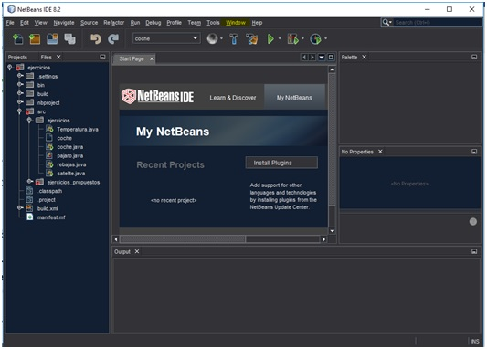

EL NetBeans
Es un esntorno de desarrollo o IDE destinado a programacion Orientada a objetos
- Es una IDE gratuita y de codigo abierto que ha sido desarrollada por Sun Microsystems.
- Gestion de la interfaz de usuario (menus y barras de herramientas)
- Gestion de configuracion de usuario
- Gestion de almacenamiento (guardar o cargar algun tipo de dato)
- Gestion de ventana
- Marco Asistente (soporta dialogos paso a paso)
- Libreria visual de Netbeans
- Herramientas de desarrollo integrado
CARACTERISTICAS
Extensiones. tambien conocidos como plugings son
- JS CSS Minify Compress
- JSHint
- ResinTemplateModule
- TypoScript Support for NetBeans IDE
- PHP WordPress Blog/CMS
- GWT4NB (for NB8.1+)
entre otras.. que se puede visitar en su pagina oficial

 Index
Index Retorno
Retorno